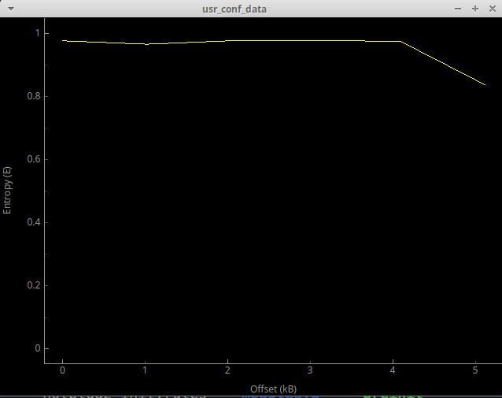
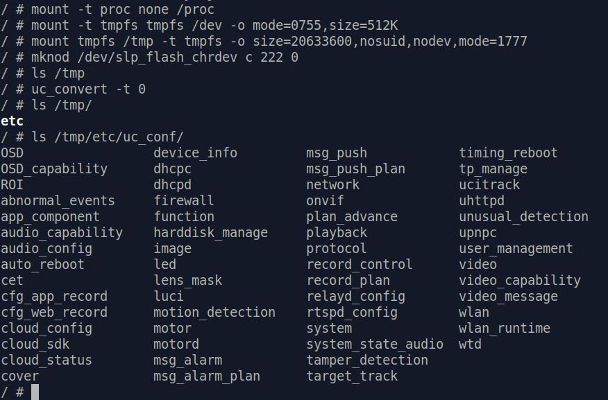
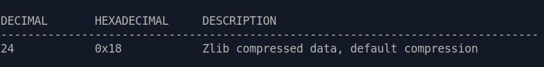
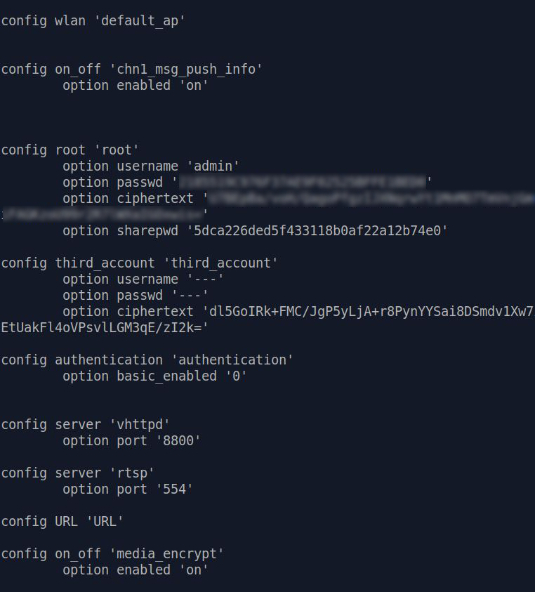

Decrypting User Config
Knowing how and where user configuration data are stored is always important when evaluating security of a product. You'll never want any bad guy who somehow gained access to your device or flash dump [*] to find the password you used everywhere is conveniently stored in plain text.
We
used grep and find to see if we can find any user config. (Password, SSID, Wi-Fi passphrase
.... etc.)
None of them can be found in our flash dump. This indicates two possibilities: they are either hashed or encrypted.
However since we can't even find the SSID of Wi-Fi
we asked C200 to connect to, it's more likely the whole user config is encrypted and stored somewhere in the flash dump.
If you've already looked a bit around the firmware file and flash dump, you might have found a
file: /etc/usr_conf_data .
Its file name looks promising, and binwalk entropy test also indicate it's an encrypted file [*]:

{kind=link}
However this file is located in squashfs , a read-only file system. Manufacturers use squashfs to
save space and store "static" data that won't be written or changed at runtime. Which means this usr_conf_data can't be the one that's storing user configs. It's
more likely a "factory default".
The Good ol' Key
Although usr_conf_data probably isn't what we're looking for, it still has its use.
It's not a news that TP-Link encrypts user config. They've been encrypting
backup config files since their early products. On the other hand, they are also known for using the same hard-coded encryption key throughout different devices.
Here's a blog post that covers this topic : http://pwn2learn.dusuel.fr/blog/unauthenticated-root-shell-on-tp-link-tl-wr902ac-router/
Unfortunately
in our case although the same encryption library and function still exist, the good ol' DES key \x47\x8d\xa5\x0b\xf9\xe3\xd2\xcf doesn't work.
Now
we have to hunt for the encryption key. The first thing to do is use grep -ir 'usr_conf_data' to see if there's any script or binary containing / accessing
this specific file name.
Luckily only one result is shown : /bin/uc_convert .
Finding encryption key
After some reverse engineering on /bin/uc_convert , it's clear to us that this binary is indeed doing encryption / decryption and other operations of user
config files. We can even simply call uc_convert -t 0 and decrypted user config will magically appear in /tmp/uc_conf/ :

Still, we won't understand where
/bin/uc_convert reads encrypted user config and what the decryption key is just by using it. So further RE is required.
We invested quite some time in it and managed to find the full chain of user
config decryption. Here is where obtaining a flash dump proves very useful :
{kind=link}
main:
When it gets -t 0 as option, it calls sub_40100c
sub_40100c:
Checks if first 4 bytes of flash 0x40000 is 0xaabbccdd, if not (which is the case)
it calls sub_400fa8
sub_400fa8:
Calls sub_4035c0
sub_4035c0:
Calls sub_403130
sub_403130:
Calls sub_403028(lVar1,0x10000,0x40000), which reads "config" partition of flash, 0x40000 ~ 0x50000.
If succeed, return data to sub_4035c0
sub_4035c0:
Calls decrypt and unpack function sub_4033e8
sub_4033e8:
Calls sub_402c34 for decryption
sub_402c34:
Calls sub_402924 and later des_min_do()
if sub_402924 fails -> puts("get encrpt key failed!")
so sub_402924 should return key
sub_402924:
Calls sub_403028(stack ptr, 0xc, 0x600c0) in which there is some ioctl that reads the content at flash address 0x600c0
which is:
0 1 2 3 4 5 6 7 8 9 A B C D E F | 0123456789ABCDEF
000600c0 4332 3030 2031 2e30 0000 0000 0000 0000 | C200 1.0........
000600d0 0000 0000 0000 0000 0000 0000 0000 0000 | ................
then if everything works fine, there is a call to sub_402890, which if it
fails -> puts("make hash string failed!") so sub_402890 is a hash function
and if it succeeds, 8 bytes of the hash are memcpy'ed and "returned"
sub_402890:
Does some checks about nulls, then calls sub_4027F0
if that call fails, puts("calculate hash value failed!")
otherwise it zeroes out some memory and does a
snprintf(ptr, 9, "%08x", return_value_of_sub_4027f0) on it
sub_4027F0:
That looks like the proper hash function
it does a loop (counter being t8, and one see the loop is over 0xc values,
so this 0xc is here again, hard coded...) and goes through bytes of the
input string (the loop aborts if one encounter a null byte, so it won't
loop over 0xc values here, since the string "C200 1.0" is 8 bytes long)Don't worry if you don't understand what the above is all about, here's a simple conclusion :
-
/bin/uc_convertreads encrypted user config from flash address 0x40000 - 0x50000, which is the same as partition "config". - Decryption key is read from flash address 0x600c0, with length 0xc (12 bytes). The content is "C200 1.0" with some trailing null bytes.
- "C200 1.0" then goes through a hash function, generating hash value : "5982a0a3"
- Decryption function calls "des_min_do()", which indicates user config is encrypted using DES.
DES has key length of 64 bit ( 8 bytes ), so we will have to convert "5982a0a3" into hex value - "3539383261306133"
Decrypt User Config
Now we've got all information we need to decrypt our user configuration!
First thing to do is obtain a dump of "config" partition from flash, which we can achieve easily by following the steps in flash dump sector.openssl can then help us decrypt the dumped user config file. The full command is :
openssl enc -d -des-ecb -nopad -K 3539383261306133 -in [dumped conf] -out [out file]
If
everything works fine, we can then use binwalk to analyze the decrypted file. You should see a "Zlib compressed data" at offset 0x18
:

With
binwalk -e we can extract the compressed data, and finally see the clear text of user config ! [*]

{kind=link}
{kind=link}
Further Reading
[Unpack Config File] - WIP
[Decrypt Ciphertext] - WIP